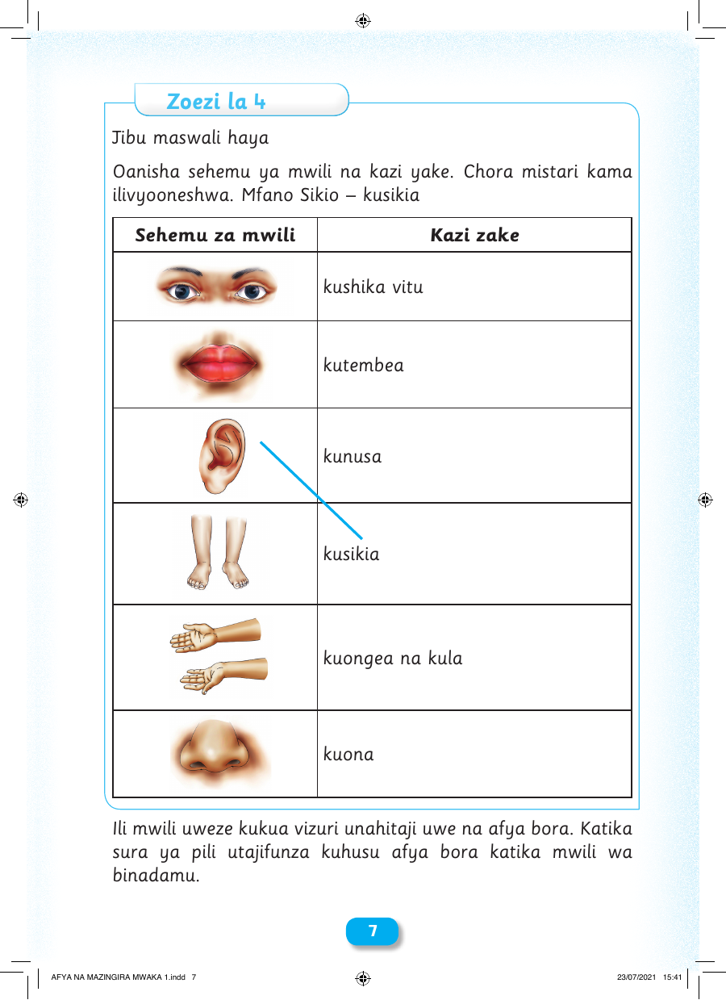

Zoezi la 4 Jibu maswali haya Oanisha sehemu ya mwili na kazi yake. Chora mistari kama ilivyooneshwa. Mfano Sikio – kusikia Sehemu za mwili Kazi zake kushika vitu kutembea kunusa kusikia kuongea na kula kuona Ili mwili uweze kukua vizuri unahitaji uwe na afya bora. Katika sura ya pili utajifunza kuhusu afya bora katika mwili wa binadamu. 77 AFYA NA MAZINGIRA MWAKA 1.indd 7 23/07/2021 15:41